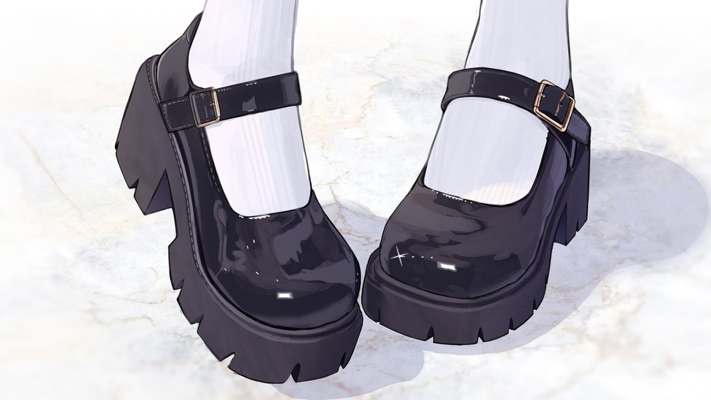

陷阱会是什么样的呢？当然是非常简单，并且充满魔力的图文陷阱，并且一定是会让你对着进行白给的“送钱”陷阱，你可以选择看见了就马上踩中陷阱对着本公主白给被汲取更多，也可以选择抵抗一段时间不知道哪天发情了就踩中陷阱开始白给🤍
需要注意的是，接受“延时陷阱”魔法以后，是不可解除的，不可逆的～

需要注意的是，接受“延时陷阱”魔法以后，是不可解除的，不可逆的～

那么，“延时陷阱”魔法的受众人群是推上所有的人哦？不止限于钱包。
只要在qq给本公主发送想要接受“延时陷阱”魔法的植入，那么就会自动生效哦，当然，推特也可以植入，只不过推特植入需要附上30的口令红包进行初次的白给。
在这以后本公主会给你发动一个有效期999年的陷阱～在踩中陷阱之前，永久有效🤍 https://t.co/AB2Lov2H0L
只要在qq给本公主发送想要接受“延时陷阱”魔法的植入，那么就会自动生效哦，当然，推特也可以植入，只不过推特植入需要附上30的口令红包进行初次的白给。
在这以后本公主会给你发动一个有效期999年的陷阱～在踩中陷阱之前，永久有效🤍 https://t.co/AB2Lov2H0L